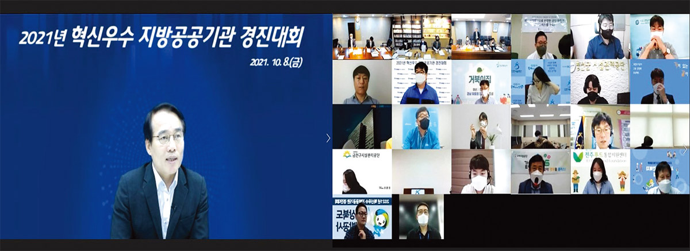
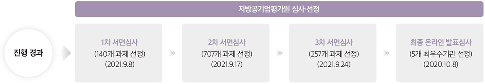
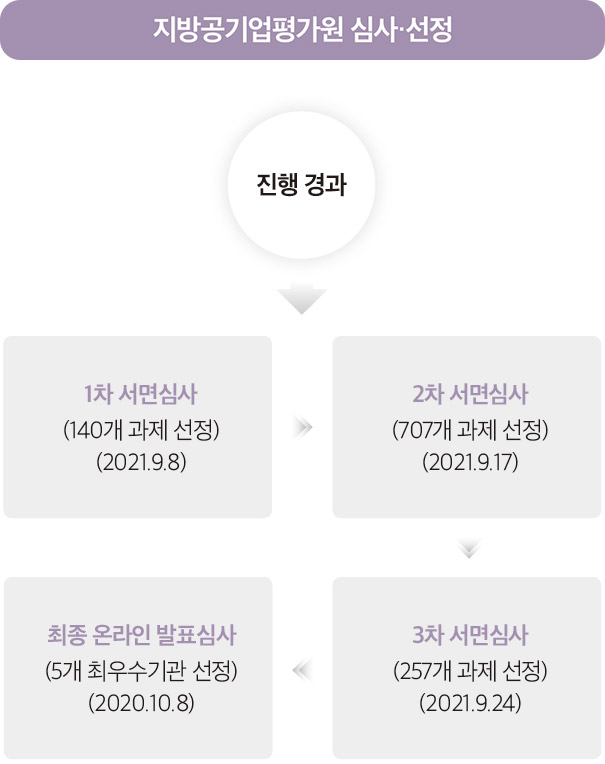

10월 8일 행정안전부가 주최하고 지방공기업평가원(이하 평가원)이 주관한 ‘2021년 혁신우수 지방공공기관 경진대회’가 온라인으로 개최됐다.
해당 경진대회는 지방공공기관 간에 혁신성과를 공유하고 확산하기 위한 장으로, 우수기관 선정을 통해 혁신문화 조성과 역량 강화의 계기를 마련하고자 했다.
▲사회적 가치 중심경영, ▲지역경제 활력 지원, ▲적극행정 등 경영혁신, ▲참여와 협력 강화, ▲재난안전관리 등 5대 분야에 총 165개 공공기관이 491개의 과제를 제출했으며, 대상 수상기관 1곳, 최우수상 수상기관 4곳, 우수상 수상기관 20곳을 선정했다.
대상 기관에 선정된 ▲인천시설공단은 ‘시민참여경영 혁신 플랫폼(Triple I)’을 구축하여 지역사회 문제를 해결하고, 대한민국 성묘문화의 새로운 패러다임을 제시하여 높은 평가를 받았다.
▲구미시설공단은 ‘코로나19 같이 극복 릴레이’, ▲서울교통공사는 ‘도심 공동물류 플랫폼 사업’, ▲태백가덕산풍력발전은 ‘풍력발전사업 최초 주민참여형 사업 운영’, ▲세종특별자치시 시설관리공단은 ‘인공지능을 활용한 안전사고예방시스템’을 구축하여 최우수상 수상기관에 선정됐다.
평가원은 3차례의 서면심사를 거치며 5개 분야 혁신과제에 대해 성과제고, 창의성, 파급효과, 지속가능성 등 4가지 요소를 기준으로 심사를 진행하고, 정부혁신추진위원과 시민위원의 참여를 통해 심사에 공정성과 객관성을 더했다.
최치국 평가원 이사장은 “이번 경진대회를 통해 지방공공기관이 연대와 협력을 공고히 할 수 있기를 기대한다”라며 “평가원은 앞으로도 지방공공기관이 적극적으로 혁신을 추진하고, 이를 확산할 수 있도록 지원하겠다”라고 말했다.

